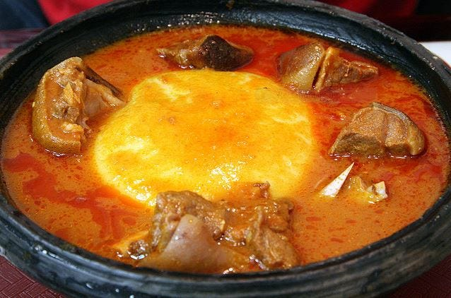
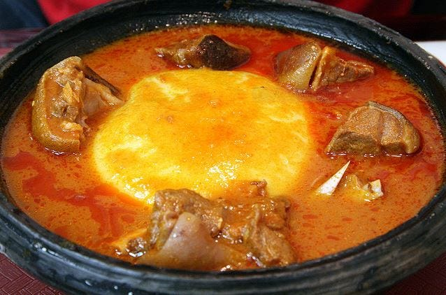

Tourism (Food Aspect)
Ingredients for Tuo Zaafi: Flour: The most common flours used are corn flour and cassava flour, often mixed in a ratio (e.g., 4 parts corn flour to 1.5 parts cassava flour). Some recipes might use millet flour or a combination. Water: For mixing the flour and for boiling. Steps to Prepare Tuo Zaafi:
Mix the Flour: In a bowl, mix the corn flour and cassava flour (or your chosen flours) with some cold water until you get a smooth, light slurry without lumps. The consistency should be similar to a thin porridge. Boil Water: Pour the remaining water into a pot and bring it to a rolling boil over medium-high heat. The amount of water will depend on the quantity of Tuo Zaafi you want to make, but a common ratio is around 1.5 liters of water for the flour quantities mentioned in some recipes. Add the Flour Mixture: Once the water is boiling, reduce the heat to medium and slowly pour the flour mixture into the boiling water while stirring continuously with a wooden spatula or a strong spoon. This continuous stirring is crucial to prevent lumps from forming. Cook and Thicken: Continue stirring vigorously as the mixture thickens and cooks. It will gradually become a thick porridge-like consistency. Add More Flour (if needed): Some recipes suggest setting aside a portion of the initial thick porridge. Then, gradually add more of the dry flour (or a thicker flour mixture) to the remaining pot, stirring constantly. This helps to achieve the desired smooth and slightly firm texture. If you set aside some of the initial porridge, you can add it back in bit by bit while stirring to adjust the consistency. "Paddling": The stirring process becomes more like "paddling" as the dough thickens and becomes more elastic. Ensure there are no lumps and the dough is smooth. This step usually takes about 20-30 minutes of continuous stirring over medium heat. Check for Doneness: The Tuo Zaafi is ready when it is smooth, slightly firm but still soft, and pulls away from the sides of the pot. It should have a uniform, slightly sticky texture. Serve Hot: Serve the Tuo Zaafi hot in individual bowls. It is typically enjoyed by tearing off pieces with your fingers and dipping them into the accompanying soup and stew. Important Tips: Continuous Stirring: The key to smooth Tuo Zaafi without lumps is constant and vigorous stirring, especially when adding the flour to the boiling water and as it thickens. Adjust Consistency: You can adjust the amount of flour and water to achieve your preferred consistency. Some people like it softer, while others prefer it slightly firmer. Traditional Tools: In Ghana, a special wooden spatula or ladle is often used for stirring and "paddling" the Tuo Zaafi. Serving: Tuo Zaafi is best served immediately while it's hot and soft


Ingredients Fresh tomatoes Beef (Goat meat, Chicken, Lamb meat) Fresh fish (tilapia or catfish) Tin tomato paste Chili peppers Onion Salt Seasoning cube and spice bay leaf Ginger and garlic 4 pcs Okro Fufu Ingredients Fresh Cassava Unripe plantain
How to Make Ghana Light Soup
First of all clean your fish remove the gills and the innards then raisin in clean water and set aside. Thereafter, wash the meat and equally keep it aside.
Secondly, blend your ginger, garlic, onion, seasoning cube, salt, and spices, scoop some quantity into the fish and marinate the fish cover and set aside.
In a pot containing the meat pour the remaining blended garlic and ginger mixture, add the tin tomato paste, salt, bay leaf, with more water, cover and cook for about 10 minutes.
Thirdly, wash your tomatoes, onions, and pepper and remove the stem of pepper scrap off the onion head.
Place fresh tomatoes, onions, pepper into a clean pot and pour 1 cup of water into the pot and bring to boil.
Next is to remove the fresh tomatoes, pepper, and onions from heat and blend. Ensure you don’t discard the boiled water from the tomatoes rather use it to blend the tomatoes; or pour into the meat add more water.
Finally, bring soup to a simmer over low heat for like 15 minutes then add the fresh fish; clean your okra/okro and add into the cooking pot, cover and cook to doneness.
Optional: Sieve the soup if you like to get the clear light look of the soup else skips the process.
Light soup is ready.
How to Make Ghana Fufu Meal
On the same note, cassava flour can be used in place of fresh cassava tubers.
First of all, peel the skin of your cassava tuber and plantains then boil for about 25-30 minutes to tender.
Secondly, using a mortar and pestle which is the major instrument for local pounding, or use a Yam pounder machine to pound it.
Start with the plantain, thereafter add the cassava, sprinkle some water as you pound for easy pounding until a smooth paste is achieved; Your smooth fufu is ready.
Serve your delicious Fufu and Light soup
 



Ingredients: 3 cups white stone-ground cornmeal (not de-germinated) 1 tbsp corn starch 3 cups warm water (105–115°F) 1 tsp salt dry corn husks Process:
Put cornmeal and cornstarch into a bowl. Add the warm water and stir until you get a smooth batter/dough. Loosely cover the bowl the bowl with a cloth or wax paper and set in a warm out of the way place for 2 days. When you are ready to use the dough start by scraping off and discarding any mold that might have formed. *see note in discussion Divide the dough in half. Bring 2 cups of water to a boil in large sauce pan. Once the water is boiling, add the salt and reduce to medium heat. Add half the dough to the water and mix it in. Let it cook for 10 minutes and stir to prevent scorching. Remove the pan from the heat, stir in the remaining dough, and mix thoroughly. Divide the dough into 3 or 4 large portions and put them onto corn husks. Shape the dough into balls. Wrap the corn husk around the ball tying it at the top. Steam or pressure cook as follows: Steaming Pour hot water into a steamer pot and put a rack on top of it. Put the wrapped kenkey on the rack and bring the water to a boil using high heat. Reduce to low heat and steam for around 90 minutes. Pressure Cooking Put the wrappers into the pressure cooker, elevated on a rack. Add enough water to the pressure cooker to meet the minimum safe level given by the manufacturer. Cook for 20 minutes at 15 psi. Quick release the pressure, then open the pressure cooker so the steam releases way from your face. Let the Kenkey dumplings cool for ten minutes. Kenkey is usually served with “shito” (a tasty, spicy sauce native to Ghana), diced or ground red and/or green pepper, and fish. Throw in a chilled Guinness after the meal to seal the deal


Ingredients: 1 large fresh tilapia thoroughly cleaned and gutted. Salt 1 teaspoon garlic powder 1 teaspoon ginger powder 1 teaspoon black pepper powder 1 teaspoon coriander powder Banku Ingredients Corn flour (4 cups) Salt to taste 10 scotch bonnet peppers or 2 teaspoons dried chilli flakes (can be reduced to your taste) 3 large onions 3 cloves of garlic 3- inch piece fresh ginger 5-6 tablespoons tomato paste Powdered dried shrimps (50g) Powdered dried herrings (50g) 1 teaspoon salt/seasoning, optional (1 teaspoon rosemary or thyme) Vegetable oil (0.5L) Instructions: Chop all ingredients (pepper, onion, seasoning and ginger) and blend with the oil into a smooth paste.
Recipe Instructions: Already prepared, corn flour purchased from an African shop is mixed with a small amount of water enough to make a dough. This is covered in an airtight container and kept at room temperature for 2-4 days to allow fermentation of the dough. The fermented dough is cooked with salted water in a sturdy pot, with continuous stirring, using a solid wooden spoon. The dough clumps up and transforms into a gloopy pulp fairly quickly. It is then allowed to steam surrounded by a little water for 30 minutes in order to cook through thoroughly. Thereafter it is given a final mix. Once cooked, the banku is dished out and traditionally shaped by hand, quickly dipping fingers into cold water then folding portion of it into a ball. A safer method of forming the banku balls is to wet the surface of a round ceramic bowl with a little water (prevent stickiness). Dip a serving spoon in cool water and scoop out the desired amount of banku into the wet bowl. Now shake the bowl in a circular motion until the round shape is formed. The banku is now ready to be served and is best eaten hot. Shito (black pepper sauce) This is the famous Ghanaian hot chilli condiment, which can be made in a variety of ways and every household has its own recipe. It goes really well with both fish and meat, and can be served as a side to most dishes. It can also be used for marinating or as a dressing, dip, spread or topping. Pour the mixture into a saucepan and cook until brown with constant stirring. Stir in the tomato paste and keep stirring to avoid the mixture sticking to the pot. Finally, add the shrimp and herrings powder, then cook over a low heat for 30-40 minutes, stirring almost continuously to prevent the mixture sticking to the pan. The contents should transform from deep red to very dark brown and the oil will rise to the surface when the sauce is ready. Taste and adjust the seasoning if necessary. Salsa-like sauce Ingredients: 2 Fresh tomatoes 1 Red onions 1 Pepper, optional Instructions: These ingredients can be chopped into small cubes or blended roughly together and salt added to taste. Other vegetables like cucumber and celery can be chopped and added which tames the hotness of the salsa while providing extra nutritional benefits. Fried Tilapia Instructions: Marinate the fish with the seasoning and allow to sit in the fridge for at least 3hours. The seasoned fish is fried in oil until thoroughly cooked. Alternatively, the marinated fish can be grilled for 1-1.5h at 180 degree celsius for a similar result


Ingredient: 3-4 slightly ripe plantains (can also be made with yam or cocoyam) Flavor & Texture: 1/4 - 1/2 cup roasted peanuts (ground or whole) 1-2 tablespoons groundnut paste (peanut butter) - optional, but adds richness 1/4 cup palm oil (or substitute with a neutral oil like canola or olive oil) 1 small onion, chopped 1-2 scotch bonnet peppers (kpakpo shito), whole or minced to taste (adjust to your spice preference) Salt to taste Protein: 1-2 salted fish (koobi or momoni), cleaned and optionally fried 2-4 hard-boiled eggs, sliced Garnish (optional): Spring onions, chopped Avocado or pear, sliced
Instructions: Cook the Plantains: Wash and peel the plantains. Cut them into smaller pieces. Place the plantains in a pot and add just enough water to cover them. Add the whole scotch bonnet pepper(s) and a pinch of salt to the pot. Bring to a boil and cook until the plantains are very soft (about 15-20 minutes). Drain the water. Prepare the Flavor Base: While the plantains are cooking, grind the roasted peanuts (if using whole) using a traditional grinding stone ('ayewa' and 'eta') or a food processor until coarsely ground. Alternatively, you can leave them whole for a chunkier texture. In the same grinding bowl or a separate bowl, mash the chopped onion and the cooked scotch bonnet pepper (if using minced) with a little salt into a paste. Mash the Plantains: In the traditional 'ayewa' (mortar) with the 'eta' (pestle), or in a large bowl using a potato masher, mash the cooked plantains until smooth. Do this while they are still hot for a smoother consistency. Combine Ingredients: Add the ground peanut mixture and groundnut paste (if using) to the mashed plantains. Continue mashing or stirring until well combined. Add the onion-pepper paste and salt to taste. Mix thoroughly. Add Palm Oil and Fish: Heat the palm oil in a small pan until it melts (if it's solid). If using salted fish, you can fry it in the palm oil until slightly crispy (optional). Pour the hot palm oil (with or without the fried fish) over the mashed plantain mixture. Mash or stir until the oil is evenly incorporated, giving the etor a nice sheen and flavor. Assemble and Garnish: Serve the etor in a bowl or plate. Garnish with slices of hard-boiled eggs, extra roasted peanuts, chopped spring onions, and slices of avocado or pear. Flake the fried salted fish (if used) over the etor. Important Notes: Traditional Method: The most authentic way to prepare etor involves using the 'ayewa' and 'eta' for mashing, which gives it a unique texture. However, a potato masher works well too. Spice Level: Adjust the amount of scotch bonnet pepper to your preference. You can also remove the seeds for less heat. Variations: As mentioned, etor can also be made with yam or cocoyam following a similar process.